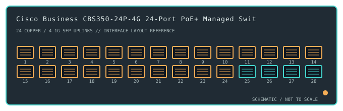

[ MODEL-SPECIFIC NETWORK HARDWARE ]
Cisco Business CBS350-24P-4G 24-Port PoE+ Managed Switch
A web-managed business switch with 24 Gigabit PoE+ copper ports, 195W PoE budget, and four Gigabit SFP uplinks.

IDENTIFICATION: Confirm the complete product label and hardware revision before applying power, firmware or transceiver assumptions. Link and fabric rates below are nominal vendor specifications, not test results.
Detailed specifications and compatibility
| Subcategory | Managed switches |
|---|---|
| Exact product and model | Cisco Business CBS350-24P-4G 24-Port PoE+ Managed Switch |
| Ports / physical interface | 24 × 10/100/1000BASE-T RJ-45 access ports supporting PoE/PoE+ and 4 × 1GbE SFP uplink slots. The SFP slots are not 10GbE. |
| Bus and host connection | Standalone 1U rack-mount Ethernet switch; powered hosts attach to RJ-45 ports and supported optical links use 1GbE SFP transceivers. |
| Nominal switching performance | 56Gb/s switching capacity for the 24-port Gigabit model. Rated fabric capacity is not measured payload throughput. |
| Power over Ethernet | Up to 195W total PoE budget on CBS350-24P-4G, shared across powered ports and subject to power supply, class draw and thermal limits. It supports PoE/PoE+ per product documentation. |
| Management and software | Cisco Business dashboard/web UI and CLI provide managed Layer 2/Layer 3-lite features. Feature set, firmware lifecycle and controller compatibility depend on regional PID and current release. |
| Power and physical form | Internal AC-powered rack/desktop chassis with active cooling. Maintain rated AC input and airflow, and budget PoE load separately from switch data throughput. |
| Compatibility | Use IEEE-compatible PoE endpoints within both per-port class and 195W aggregate budget. Four uplink cages accept only supported 1GbE SFP modules; verify optics, VLAN tagging and firmware against Cisco's compatibility list. |
| Variant identification | CBS350-24P-4G is the 24-port PoE+ model with 1GbE SFP uplinks. It differs from CBS350-24T-4G (non-PoE), CBS350-24FP-4G and regional/EU suffix variants. |
| Measured throughput | No physical sample was benchmarked for this record. Nominal line rate and switching-fabric ratings are not measured application throughput. |
Revision-specific use notes
CBS350-24P-4G is the 24-port PoE+ model with 1GbE SFP uplinks. It differs from CBS350-24T-4G (non-PoE), CBS350-24FP-4G and regional/EU suffix variants.
Use IEEE-compatible PoE endpoints within both per-port class and 195W aggregate budget. Four uplink cages accept only supported 1GbE SFP modules; verify optics, VLAN tagging and firmware against Cisco's compatibility list.
Cisco Business dashboard/web UI and CLI provide managed Layer 2/Layer 3-lite features. Feature set, firmware lifecycle and controller compatibility depend on regional PID and current release.
Archival, ESD and preservation notes
Record the full SKU and hardware revision, serial/date code, firmware release, supply label, installed transceiver identifiers and physical port test results. Keep configuration backups free of credentials and private network details.
Disconnect mains and attached PoE loads before service. Keep optics capped and store transceivers separately with their wavelength, fiber mode and part number recorded.
Manufacturer sources
- Cisco Business 350 Series product informationManufacturer product or model-specific technical documentation. Verify the exact SKU, hardware revision, region and firmware.
- Cisco Business 350 Series support and product documentationManufacturer product or model-specific technical documentation. Verify the exact SKU, hardware revision, region and firmware.
Confirm the source's revision/region applicability against the item label. Manufacturer link rates and capacity ratings are not measurements of application-level throughput.